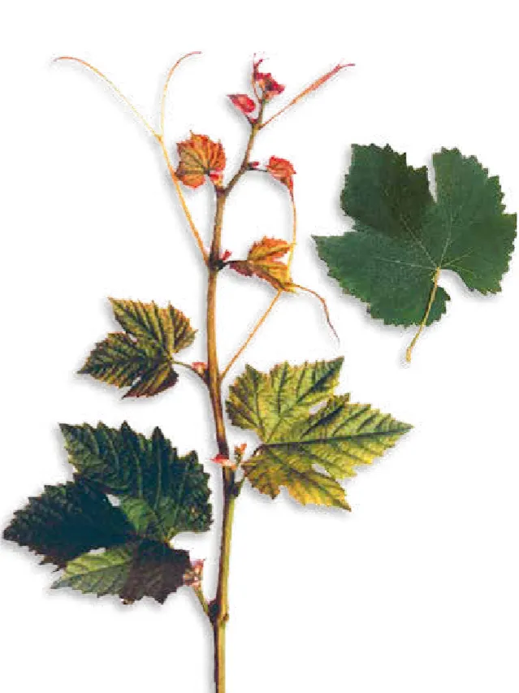

Chapter 3 · The Portuguese grape varieties
Fernão Pires (W)
Origin and distribution:
The Centro statistical region of Portugal. Bairrada, Estremadura province, Tejo. and Terras do Sado. Silva and Teles (1790) noted this variety in Bairrada, Douro and the Estremadura province, and Lacerda Lobo (1790) recorded its presence in Guarda. Internationally, it is cultivated in Australia, New Zealand, California and South Africa.
Wine Description:
This wine surprises with the elegance and complexity of its aroma, identified by some vegetal notes and pepper tones combined with floral notes such as rose and violet. They are mixed with mineral notes of flint, or fruity notes of lemon. With ageing the taste and aroma take on hints of hazelnut, pinenut and resin (V. Loureiro).
Classification:
Vinho de Qualidade DOC: Douro, Távora, Bairrada, Óbidos, Alenquer, Arruda, Torres Vedras, Tejo, Palmela.
Vinho de Qualidade IPR: Alcobaça, Valpaços, Encostas d'Aire.
Vinho Regional: Minho, Trás-os-Montes, all sub-regions of Beira Interior, all sub-regions of Estremadura province, Tejo, Terras do Sado, Alentejo, Algarve, Açores.
Morphology:

Young shoot (form of tip): Open with crimson red tip, hairs of medium density.
Young leaf: Yellow with bronze spots, hairs of medium density on ventral side.
Young shoot (form of tip): Green with green buds. Tendrils at internodes above middle third of shoot.
Inflorescence (sex of flower): Hermaphrodite.
Mature leaf: Small, pentagonal, five lobes; medium green blade, irregular, medium blistering of upper side of blade, rugose; sparse hairs on lower side of blade; short convex teeth. Slightly open V-shaped petiolar sinus. Open V-shaped upper lateral sinuses.
Bunch: Small, cylindrical, medium density, peduncle of medium length.
Berry: Slightly oblate, medium size, yellow green, berry skin of medium thickness, soft flesh.
Phenology:
Time of bud burst: Early.
Flowering: Early.
Berry (colour change): Early.
Berry (harvest ripe): Early.
Vegetative and viticultural potential:
Vigour of shoot growth: High.
Pruning weight: 1,800–2,500 kg/ha.
Shoot attitude (habit): Plagiotropic (drooping).
Shoot length: Some very long.
Bud fertility index: Medium to high.
Yield: Medium (5,000–10,000 l/ha). (RNSV statistical value: 1.72 kg/vine (Average of at least 40 clones in Nelas over 2 years).
Yield consistency: Consistent.
Crop uniformity: Uniform.
Sensitivity to abiotic factors: Quite resistant to drought. Shoots break easily in the wind.
Susceptibility to fungal diseases: Medium susceptibility to Peronospora, Oidium and Botrytis.
Susceptibility to Pests: Susceptible to the green leaf roller, the grape berry moth, and Erinosis.
Bunch size: Medium to small.
Bunch density: Dense.
Berry skin: Medium thickness.
Seeds per berry: Medium.
Training system: Adapts to all types of training systems, particularly the cordon.
Soil suitable for quality wine: Deep, well-drained, sandy podzolic soils (Pegões), alluvial soils and Pliocene sandy soils (Tejo).
Favourable climate: Very versatile variety tolerant of moderate to hot climates, as long as there is moisture in the soil.
Vine density: All usual vine spacings are suitable.
Rootstocks: No known affinity problems. Must be suited to the soil type.
Incidence of coulure/millerandage: Low susceptibility.
Spoilage of mature berries: The grape matures very early and should therefore be harvested before overripening (during the high heat phase) so that it does not lose acidity and freshness.
Risk of bird damage: Because it matures early, it needs protection from bird attacks.
Machine harvest suitability: Not well suited, given the heat at harvest time. Night harvest recommended.
Oenological potential:
Wine type: Quality wine and blend wines
Potential alcohol content: High (11.5–13% vol.). (RNSV statistical value: 11.52% vol. (Average of at least 40 clones in Caldas da Rainha over 4 years).
Natural acidity of must: Medium (total acid content, 4.5–6.5 g/l; malic acid, 0.4g/l; tartaric acid, 4.4 g/l). Sometimes the acid content falls abruptly below 5 g/l if the alcohol level exceeds 12% in hot regions. RNSV statistical value: 6.09 g/l (Average of at least 40 clones in Caldas da Rainha over 4 years).

Risk of oxidation of must: Medium.
Colour intensity of wine: Medium.
Wine colour tonality: Lemon yellow, light yellowish.
Aromatic profile: Very high level of terpenoid compounds, at over 400 μg/l, with 203.8 μg/l linalool, 186 μg/l α-terpineol, 9 μg/l nerol, and 18.3 μg/l gernaiol. Sensorially, this is confirmed by its aromatic richness. In very hot regions, the wine’s aroma can become quite cloying.
Ageing potential: Recommended that the wine is drunk early, whilst it still retains its fruity aroma. Nevertheless, it has high ageing potential if berries which are not overripe are barrel aged.